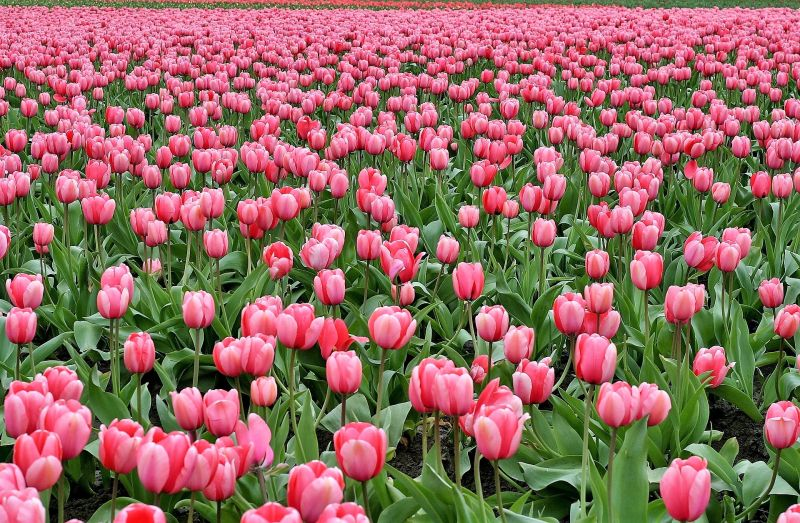

En medio de un paisaje lleno de vida y color, se extiende un campo majestuoso cubierto por una marea de flores rosas. En este idílico escenario, el suelo se viste de un manto delicado y suave, donde cada paso es como adentrarse en un cuento de hadas. Las flores, con sus pétalos suaves y sedosos, bailan con la brisa, creando una sinfonía visual que deleita los sentidos.
